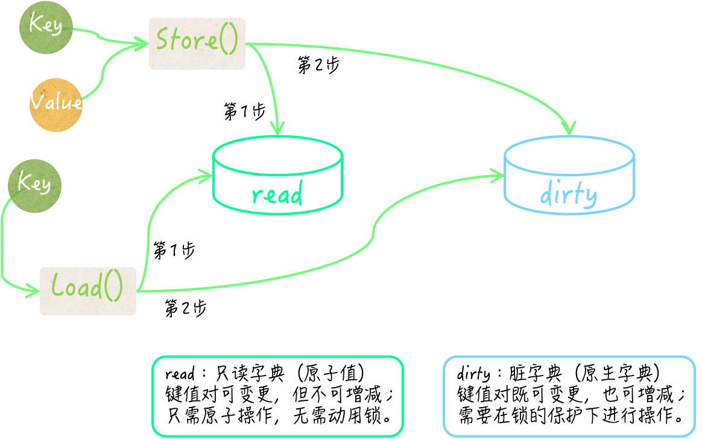
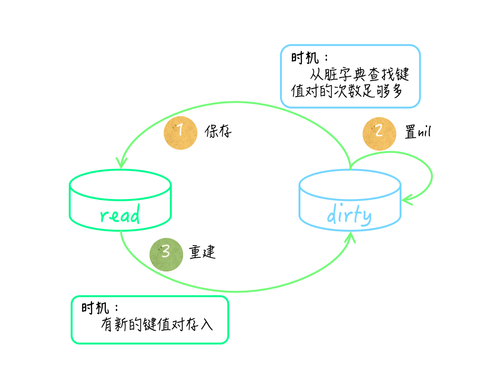

- 00 导读 写给0基础入门的Go语言学习者.md.html
- 00 导读 学习专栏的正确姿势.md.html
- 00 开篇词 跟着学，你也能成为Go语言高手.md.html
- 01 工作区和GOPATH.md.html
- 02 命令源码文件.md.html
- 03 库源码文件.md.html
- 04 程序实体的那些事儿（上）.md.html
- 05 程序实体的那些事儿（中）.md.html
- 06 程序实体的那些事儿 （下）.md.html
- 07 数组和切片.md.html
- 08 container包中的那些容器.md.html
- 09 字典的操作和约束.md.html
- 10 通道的基本操作.md.html
- 11 通道的高级玩法.md.html
- 12 使用函数的正确姿势.md.html
- 13 结构体及其方法的使用法门.md.html
- 14 接口类型的合理运用.md.html
- 15 关于指针的有限操作.md.html
- 16 go语句及其执行规则（上）.md.html
- 17 go语句及其执行规则（下）.md.html
- 18 if语句、for语句和switch语句.md.html
- 19 错误处理（上）.md.html
- 20 错误处理 （下）.md.html
- 21 panic函数、recover函数以及defer语句 （上）.md.html
- 22 panic函数、recover函数以及defer语句（下）.md.html
- 23 测试的基本规则和流程 （上）.md.html
- 24 测试的基本规则和流程（下）.md.html
- 25 更多的测试手法.md.html
- 26 sync.Mutex与sync.RWMutex.md.html
- 27 条件变量sync.Cond （上）.md.html
- 28 条件变量sync.Cond （下）.md.html
- 29 原子操作（上）.md.html
- 30 原子操作（下）.md.html
- 31 sync.WaitGroup和sync.Once.md.html
- 32 context.Context类型.md.html
- 33 临时对象池sync.Pool.md.html
- 34 并发安全字典sync.Map （上）.md.html
- 35 并发安全字典sync.Map (下).md.html
- 36 unicode与字符编码.md.html
- 37 strings包与字符串操作.md.html
- 38 bytes包与字节串操作（上）.md.html
- 39 bytes包与字节串操作（下）.md.html
- 40 io包中的接口和工具 （上）.md.html
- 41 io包中的接口和工具 （下）.md.html
- 42 bufio包中的数据类型 （上）.md.html
- 43 bufio包中的数据类型（下）.md.html
- 44 使用os包中的API （上）.md.html
- 45 使用os包中的API （下）.md.html
- 46 访问网络服务.md.html
- 47 基于HTTP协议的网络服务.md.html
- 48 程序性能分析基础（上）.md.html
- 49 程序性能分析基础（下）.md.html
- 尾声 愿你披荆斩棘，所向无敌.md.html
- 新年彩蛋 完整版思考题答案.md.html
- 捐赠
35 并发安全字典sync.Map (下)
你好，我是郝林，今天我们继续来分享并发安全字典sync.Map的内容。
我们在上一篇文章中谈到了，由于并发安全字典提供的方法涉及的键和值的类型都是interface{}，所以我们在调用这些方法的时候，往往还需要对键和值的实际类型进行检查。
这里大致有两个方案。我们上一篇文章中提到了第一种方案，在编码时就完全确定键和值的类型，然后利用Go语言的编译器帮我们做检查。
这样做很方便，不是吗？不过，虽然方便，但是却让这样的字典类型缺少了一些灵活性。
如果我们还需要一个键类型为uint32并发安全字典的话，那就不得不再如法炮制地写一遍代码了。因此，在需求多样化之后，工作量反而更大，甚至会产生很多雷同的代码。
知识扩展
问题1：怎样保证并发安全字典中的键和值的类型正确性？（方案二）
那么，如果我们既想保持sync.Map类型原有的灵活性，又想约束键和值的类型，那么应该怎样做呢？这就涉及了第二个方案。
在第二种方案中，我们封装的结构体类型的所有方法，都可以与sync.Map类型的方法完全一致（包括方法名称和方法签名）。
不过，在这些方法中，我们就需要添加一些做类型检查的代码了。另外，这样并发安全字典的键类型和值类型，必须在初始化的时候就完全确定。并且，这种情况下，我们必须先要保证键的类型是可比较的。
所以在设计这样的结构体类型的时候，只包含sync.Map类型的字段就不够了。
比如：
type ConcurrentMap struct {
m sync.Map
keyType reflect.Type
valueType reflect.Type
}
这里ConcurrentMap类型代表的是：可自定义键类型和值类型的并发安全字典。这个类型同样有一个sync.Map类型的字段m，代表着其内部使用的并发安全字典。
另外，它的字段keyType和valueType，分别用于保存键类型和值类型。这两个字段的类型都是reflect.Type，我们可称之为反射类型。
这个类型可以代表Go语言的任何数据类型。并且，这个类型的值也非常容易获得：通过调用reflect.TypeOf函数并把某个样本值传入即可。
调用表达式reflect.TypeOf(int(123))的结果值，就代表了int类型的反射类型值。
我们现在来看一看ConcurrentMap类型方法应该怎么写。
先说Load方法，这个方法接受一个interface{}类型的参数key，参数key代表了某个键的值。
因此，当我们根据ConcurrentMap在m字段的值中查找键值对的时候，就必须保证ConcurrentMap的类型是正确的。由于反射类型值之间可以直接使用操作符==或!=进行判等，所以这里的类型检查代码非常简单。
func (cMap *ConcurrentMap) Load(key interface{}) (value interface{}, ok bool) {
if reflect.TypeOf(key) != cMap.keyType {
return
}
return cMap.m.Load(key)
}
我们把一个接口类型值传入reflect.TypeOf函数，就可以得到与这个值的实际类型对应的反射类型值。
因此，如果参数值的反射类型与keyType字段代表的反射类型不相等，那么我们就忽略后续操作，并直接返回。
这时，Load方法的第一个结果value的值为nil，而第二个结果ok的值为false。这完全符合Load方法原本的含义。
再来说Store方法。Store方法接受两个参数key和value，它们的类型也都是interface{}。因此，我们的类型检查应该针对它们来做。
func (cMap *ConcurrentMap) Store(key, value interface{}) {
if reflect.TypeOf(key) != cMap.keyType {
panic(fmt.Errorf("wrong key type: %v", reflect.TypeOf(key)))
}
if reflect.TypeOf(value) != cMap.valueType {
panic(fmt.Errorf("wrong value type: %v", reflect.TypeOf(value)))
}
cMap.m.Store(key, value)
}
这里的类型检查代码与Load方法中的代码很类似，不同的是对检查结果的处理措施。当参数key或value的实际类型不符合要求时，Store方法会立即引发panic。
这主要是由于Store方法没有结果声明，所以在参数值有问题的时候，它无法通过比较平和的方式告知调用方。不过，这也是符合Store方法的原本含义的。
如果你不想这么做，也是可以的，那么就需要为Store方法添加一个error类型的结果。
并且，在发现参数值类型不正确的时候，让它直接返回相应的error类型值，而不是引发panic。要知道，这里展示的只一个参考实现，你可以根据实际的应用场景去做优化和改进。
至于与ConcurrentMap类型相关的其他方法和函数，我在这里就不展示了。它们在类型检查方式和处理流程上并没有特别之处。你可以在demo72.go文件中看到这些代码。
稍微总结一下。第一种方案适用于我们可以完全确定键和值具体类型的情况。在这种情况下，我们可以利用Go语言编译器去做类型检查，并用类型断言表达式作为辅助，就像IntStrMap那样。
在第二种方案中，我们无需在程序运行之前就明确键和值的类型，只要在初始化并发安全字典的时候，动态地给定它们就可以了。这里主要需要用到reflect包中的函数和数据类型，外加一些简单的判等操作。
第一种方案存在一个很明显的缺陷，那就是无法灵活地改变字典的键和值的类型。一旦需求出现多样化，编码的工作量就会随之而来。
第二种方案很好地弥补了这一缺陷，但是，那些反射操作或多或少都会降低程序的性能。我们往往需要根据实际的应用场景，通过严谨且一致的测试，来获得和比较程序的各项指标，并以此作为方案选择的重要依据之一。
问题2：并发安全字典如何做到尽量避免使用锁？
sync.Map类型在内部使用了大量的原子操作来存取键和值，并使用了两个原生的map作为存储介质。
其中一个原生map被存在了sync.Map的read字段中，该字段是sync/atomic.Value类型的。 这个原生字典可以被看作一个快照，它总会在条件满足时，去重新保存所属的sync.Map值中包含的所有键值对。
为了描述方便，我们在后面简称它为只读字典。不过，只读字典虽然不会增减其中的键，但却允许变更其中的键所对应的值。所以，它并不是传统意义上的快照，它的只读特性只是对于其中键的集合而言的。
由read字段的类型可知，sync.Map在替换只读字典的时候根本用不着锁。另外，这个只读字典在存储键值对的时候，还在值之上封装了一层。
它先把值转换为了unsafe.Pointer类型的值，然后再把后者封装，并储存在其中的原生字典中。如此一来，在变更某个键所对应的值的时候，就也可以使用原子操作了。
sync.Map中的另一个原生字典由它的dirty字段代表。 它存储键值对的方式与read字段中的原生字典一致，它的键类型也是interface{}，并且同样是把值先做转换和封装后再进行储存的。我们暂且把它称为脏字典。
注意，脏字典和只读字典如果都存有同一个键值对，那么这里的两个键指的肯定是同一个基本值，对于两个值来说也是如此。
正如前文所述，这两个字典在存储键和值的时候都只会存入它们的某个指针，而不是基本值。
sync.Map在查找指定的键所对应的值的时候，总会先去只读字典中寻找，并不需要锁定互斥锁。只有当确定“只读字典中没有，但脏字典中可能会有这个键”的时候，它才会在锁的保护下去访问脏字典。
相对应的，sync.Map在存储键值对的时候，只要只读字典中已存有这个键，并且该键值对未被标记为“已删除”，就会把新值存到里面并直接返回，这种情况下也不需要用到锁。
否则，它才会在锁的保护下把键值对存储到脏字典中。这个时候，该键值对的“已删除”标记会被抹去。

sync.Map中的read与dirty
顺便说一句，只有当一个键值对应该被删除，但却仍然存在于只读字典中的时候，才会被用标记为“已删除”的方式进行逻辑删除，而不会直接被物理删除。
这种情况会在重建脏字典以后的一段时间内出现。不过，过不了多久，它们就会被真正删除掉。在查找和遍历键值对的时候，已被逻辑删除的键值对永远会被无视。
对于删除键值对，sync.Map会先去检查只读字典中是否有对应的键。如果没有，脏字典中可能有，那么它就会在锁的保护下，试图从脏字典中删掉该键值对。
最后，sync.Map会把该键值对中指向值的那个指针置为nil，这是另一种逻辑删除的方式。
除此之外，还有一个细节需要注意，只读字典和脏字典之间是会互相转换的。在脏字典中查找键值对次数足够多的时候，sync.Map会把脏字典直接作为只读字典，保存在它的read字段中，然后把代表脏字典的dirty字段的值置为nil。
在这之后，一旦再有新的键值对存入，它就会依据只读字典去重建脏字典。这个时候，它会把只读字典中已被逻辑删除的键值对过滤掉。理所当然，这些转换操作肯定都需要在锁的保护下进行。
- sync.Map中read与dirty的互换
综上所述，sync.Map的只读字典和脏字典中的键值对集合，并不是实时同步的，它们在某些时间段内可能会有不同。
由于只读字典中键的集合不能被改变，所以其中的键值对有时候可能是不全的。相反，脏字典中的键值对集合总是完全的，并且其中不会包含已被逻辑删除的键值对。
因此，可以看出，在读操作有很多但写操作却很少的情况下，并发安全字典的性能往往会更好。在几个写操作当中，新增键值对的操作对并发安全字典的性能影响是最大的，其次是删除操作，最后才是修改操作。
如果被操作的键值对已经存在于sync.Map的只读字典中，并且没有被逻辑删除，那么修改它并不会使用到锁，对其性能的影响就会很小。
总结
这两篇文章中，我们讨论了sync.Map类型，并谈到了怎样保证并发安全字典中的键和值的类型正确性。
为了进一步明确并发安全字典中键值的实际类型，这里大致有两种方案可选。
其中一种方案是，在编码时就完全确定键和值的类型，然后利用Go语言的编译器帮我们做检查。
另一种方案是，接受动态的类型设置，并在程序运行的时候通过反射操作进行检查。
这两种方案各有利弊，前一种方案在扩展性方面有所欠缺，而后一种方案通常会影响到程序的性能。在实际使用的时候，我们一般都需要通过客观的测试来帮助决策。
另外，在有些时候，与单纯使用原生字典和互斥锁的方案相比，使用sync.Map可以显著地减少锁的争用。sync.Map本身确实也用到了锁，但是，它会尽可能地避免使用锁。
这就要说到sync.Map对其持有两个原生字典的巧妙使用了。这两个原生字典一个被称为只读字典，另一个被称为脏字典。通过对它们的分析，我们知道了并发安全字典的适用场景，以及每种操作对其性能的影响程度。
思考题
今天的思考题是：关于保证并发安全字典中的键和值的类型正确性，你还能想到其他的方案吗？
© 2019 - 2023 Liangliang Lee. Powered by gin and hexo-theme-book.